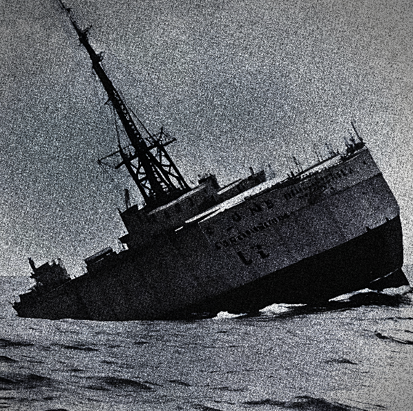

Baltin War ends!
DECEMBER 23RD, 1936
Pictured: Last photo of the PRU ship Za Katarine Before Sinking below the waves
A civilian cargo vessel from the PRU, known as the "За Катаріне", or Za Katarine, sunk in the Intermarum Canal today. Investigators have told us that several Kellerian military ships were passing through the Canal at the time, and no other obstructions or ships were spotted in the canal. The ship was seen on fire briefly before a detonation occured below deck, resulting in the ship sinking. No members of the Za Katarine's crew have been recovered. Investigations ongoing.Elehonian Civil War!
May 5, 1957
Image
Bloody May! Millions dead in a single month, as chaotic infighting starts between levvies and even the forces on individual bases. Elehonia suffers massively as a whole.
Molluk Crisis comes to an end!
May 10, 1957
Image
Molluk transfers lease from Baltin to Elehonia. World breathes a sigh of relief, knowing the battle for some goddamn rock would have been far too bloody to justify.